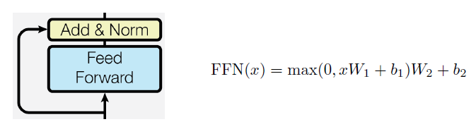

Attention Is All You Need
Attention is all you need 是一篇 Google 在 2017 年提出的論文，主要提出了名為 transformer 的 model。在這個 model 中，使用了 attention layer，提供了 NLP 模型平行處理機制，解決 Recurrent Models 以 batch 訓練時所遇到的記憶體限制問題。也讓 NLP model 有機會考量到當句子很長時，距離不同長度的資訊，這篇論文言簡意賅，重點都有提到，也提供了詳盡的 reference，再加上網路上已經有很多參考的影片和文章，甚至有程式碼可供練習，是一篇值得細細品味的論文，也是一個進入 NLP 很好的切入點。
Transformer
整篇論文，可以用論文中的這張圖說完。但每一個小部分都可以細細地去研究，去了解它的資訊如何流動。首先它是一個 Sequence to Sequence model：整體來看，可以分為左邊的 Encoder 和右邊的 Decoder 部分， 而這個 model 有 N 層，default N=6，也就是左邊有 6 層，右邊也有 6 層，假設 N=2 的話，則如下圖：
我們可以看出 Encoder 的 output 會輸入到 Decoder，而 Decoder 會依序 output 出一個個 token，就像 Sequence to Sequence models 一樣，而進入 Decoder 後，information 會流向Decoder 的每一層 Sub-layers，而不是 Output 到 Decoder 的第一層而已。
Tokenizer
接下來，我們將從 inputs 開始，藉由資訊流動的順序逐一探討這篇論文。在 paper 裡的 5.1 中有提到 inputs 是一個一個的 token，使用的方法是 BPE (Byte-Pair Encoding)。BPE 是一種很有彈性的編碼方式，原理是將常見的字元組合合併為另一個 sub-word，稱之為 token，由它編碼的方式可以得知，最後字典允許包含越多的 token，單一的 token(sub-word) 就有機會越長；單一 token(sub-word) 越長，每一次的文字輸入就可以拆成較少的 tokens。OpenAI 有提供一個 tokenizer 的服務，以 transformers 這個 word 為例 (GPT-3也是用 BPE)：它會拆成 2 個 tokens，分別為 transform 加 ers 所組成。
Embedding
Embedding layer 可參考 Word2Vector (CBOW & Skip-Gram) 的 models 得知它的概念，簡單來說，我們從語料庫 corpus 找到所有的 tokens 之後，便可以將輸入句子拆成許多 tokens ，再來要將 token 編碼的方式，可以由 one-hot encoded vector 表示：舉例來說，假設總共的語料庫 corpus 只有兩句話 corpus={ ‘train wonderful transformers’,’good transformers are not easy to be trained’}，那我們透過 BPE 可以將 tokens 拆成 tokens={’train’,’wonderful’,’transform’,’ers’,’good’, ’are’,’not’,’easy’,’to’,’be’,’trained’} 共 11 個 tokens。one-hot encoded vector 則將這些 token 編碼成維度為11的 vector：encoded vectors={’train’=[1,0,0,0,0,0,0,0,0,0,0], ’wonderful’=[0,1,0,0,0,0,0,0,0,0,0], ’transform’=[0,0,1,0,0,0,0,0,0,0,0], …, ’trained’=[0,0,0,0,0,0,0,0,0,0,1] }。所以每個 token 都可以編碼成維度為 11 的 one-hot vector ，也就是我們要輸入進 transformer model 的 inputs。但我們分析一下每個 vector 都是彼此正交，即使 wonderful 和 good 這兩個 token 都有「好」的意思，，但以 one-hot vector 編碼我們看不出任何關係，維度也非常高。我們需要一個 Embedding Layer 來將 one-hot vectors 做降維或是資訊濃縮的動作，假設我們由11維降成2維，我們也許就可能在2維平面上看到 wonderful 和 good 是在相近的位置。而這個 embedding layer，在 transformer model 中可以藉由訓練得到。在 transformer model 中，它參考了 Using the output embedding to improve language models，使用 weight tying 的方法，共享了 Input Embedding, Output Embedding, 以及 pre-softmax 的權重，減少了參數量以及訓練的難度。
Attention Layer
字串拆成一排 sub-words (tokens) 後，就可以轉成一排 one-hot vectors ，經過 embedding layer，也是變成一排維度較小的 vectors。然後這一排 vectors 會輸入到 Multi-Head Attention (我們先略過 positional encoding ，因為 positional encoding 並不會改變輸入的維度或形狀)，論文中描述的multi-head圖如下：
其中 Mulit-Head Attention 由 h 個 Scaled Dot-Product Attention 所組成，在 Scaled Dot-Product Attention 中，其中 Q 代表 Query，K 代表 Key，V 代表 Value。這樣看起來好像魔法一樣，就經過 Linear 層，一堆 MatMul，就得到結果，讓人猜不透為何要這樣設計，不過在李宏毅老師的 self-attention 教學影片中有很詳盡的介紹，所謂 attention layer 的好處是會考慮到每個 input vector 相互之間的關係，微觀看起來像這樣
我們可以看出，attention layer 的 vectors 數目與上一層相同，而以輸出 b1 為例，b1 的產生參考到上一層所有的 vectors a1 ~ a4，首先 a1 會透過一層線性轉換而得到 q1，然後 q1 向量會和所有 a1~a4 vector各自經過線性轉換得到的 k1~k4 做內積相乘得到各自相關的相關純量，而兩兩先關的純量會再乘以所有 a1~a4 vector各自經過線性轉換得到v1~v4，最後相加起來得到 b1。其中詳細產生的方式可以參考李宏毅老師的教學影片，這邊做這張圖的用意是在於介紹到資訊如何產生以及 attention layer output 如何 attend 到上一層所有的 vectors，由於每一個 output 的 vector 的產生方式皆相同，所以便可以合併成矩陣的乘法，如下式：

而 Multi-Head Attention Layer 就是很多組 attention layer 平行運算，最後再 concatenate 在一起。
Positional Encoding
看到這裡我們可能會好奇，雖然參考到所有的 Vector，但怎麼知道它們的相關位置，而且有些字放的位置不同，就會有不同的意思，這就是 Positional Encoding 存在的目的，這篇論文使用不同頻率的 sin 和 cos function 來放入 position 的 information，公式如下：
其中pos是位置的資訊，i 指向量中第幾維，若 i 為偶數用 sin 函數，若 i 為奇數用 cos 函數 ，就我直覺看起來就是把 position information 隱藏在頻率域，所以不會增加 vectors 原本的維度，卻可以同時傳達位置的訊息，就像我們可以藏一些訊息在人聽不到的高頻聲音訊號那樣，我是這樣去簡單理解它的概念，有一篇 Transformer Architecture: The Positional Encoding 寫的很棒，寫到這樣的方式可以在不同維度用不同角速度 encode position ，概念上有點像用二進位的不同次方去 encode 那樣。我同時在想，如果是這樣的話，model做 quantization 會影響到 model 的 performance 應該是很有可能的事 …。一方面雖一直覺得這樣的 encoding 方式很不直覺，把 position 的資訊分成 sin 和 cos 函數藏在不同維度裡，那模型還得參考不同維度的資訊才可以還原出 position 的資訊，但另一方面我也一時想不到更好的方法。我想光研究這個，就應該是個蠻有趣的題目ＸＤ。最後我們畫出 position encoding 的圖，大家可以比較一下每個位置上不同維度的值來感受一下：
Layer Normalization
在 data 經過 Multi-Head Attention Layer 後，會經過如下圖這一層 Add & Norm：
其中 Add 就像 Residual layer 一樣，是跟上一層的 input 做相加，可以避免梯度消失的問題，而 Norm 是指 Layer Normalization，Layer Normalization 與 Batch Normalization 稍有不同，是對這一層 input 的所有 feature 做 normalize，而 Batch Normalization 是對於一個 feature 在這一個 batch 裡的所有 data 做 normalization。
Position-wise Feed-Forward Networks
再來， data 會經過 Feed-Forward network，主要就是兩層線性轉換(或是稱做 Fully Connected Layer，一樣的意思)，中間經過 ReLU，如下圖：

Decoder
介紹完 Encoder 之後，我們來看 Decoder：
可以看到 Decoder 與 Encoder 的模型很像，但運作的方式與 Encoder 不太一樣。同樣可以參考李宏毅老師介紹 Decoder 的影片，假設我們做的是一個英翻中的 transformer model，會需要先從下端輸入一個代表 Begin 的 token，那經過 Decoder 的 model，最後會從上端 output 一個中文的 token，得到這個 token 後，我們會把 Begin 跟這一個 token 再一起輸入到 Decoder，這樣 iterative 進行，直到最後輸出代表 End 的 token。
依照上面這樣的運作方式，可能會有一個問題，就是我們在 Encoder 輸入及每層的 Vectors 的數量是一致的，但 Decoder 輸入的 Vector 數量卻是不同的，所以我們需要 mask attention layer，主要是 mask 掉未來 vectors 的 attention ，這個是與 Encoder有些不同的地方，另外中間的 attention layer 有兩個箭頭是來自 Encoder，主要是 key vectors 和 value vectors，而 query vectors 則是來自 Decoder 自己，這叫做 cross attention，讓 Decoder 能參考 Encoder的結果。
Summary
這篇論文介紹的 attention layer， sequence to sequence， weight tying 的概念，並不是全新的概念，所以文章裡並沒有非常仔細地說明細節，要看懂這篇論文，必須要配合相關的論文一起看，才能融會貫通！我自己的習慣則是除了研究相關論文之外，再從程式碼去了解它的細節，感覺收穫很多。因為 attention layer 也已經被用在 computer vision 上，所以建議不論是學習 NLP 的人，或者是 computer vision 的人，都應該看一下這篇論文。